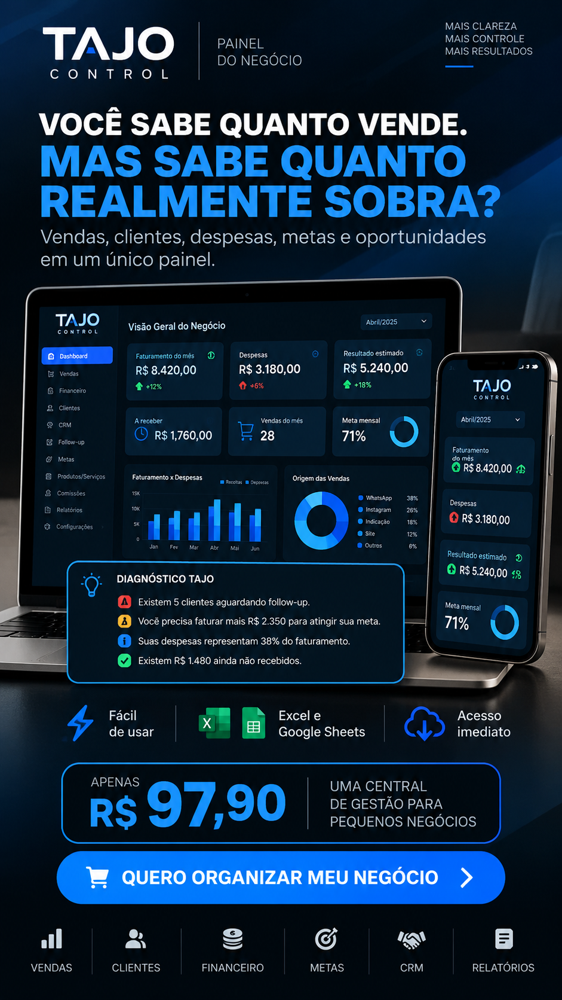

Você sabe quanto vende.
Mas sabe quanto realmente sobra?
Centralize vendas, clientes, despesas, metas, cobranças e oportunidades em um painel simples — sem começar por um ERP complexo.
TAJO CONTROL • dados demonstrativos
É administrar com a informação espalhada.
Quando cada dado fica em um lugar, responder perguntas simples sobre o negócio começa a exigir memória, procura e improviso.
Clientes, pedidos e negociações ficam misturados em conversas.
Pix e extratos
Receber dinheiro não mostra sozinho venda, custo e resultado.
Cadernos e notas
Anotações ajudam no momento, mas não viram uma visão geral.
Memória
Follow-ups, cobranças e metas não deveriam depender de lembrar de tudo.
Faça um diagnóstico de 30 segundos
Responda sem abrir aplicativo, planilha, extrato ou conversa.
Não é sobre ter mais informação. É sobre enxergar o que importa.
Antes: informação espalhada
Com TAJO CONTROL
Uma central simples por fora e inteligente por dentro.
Preencha os dados e acompanhe o negócio sem transformar sua rotina em um projeto de ERP.
Dashboard
Visão geral dos indicadores registrados.
Vendas
Cliente, produto, valor, pagamento, status e origem.
Receitas
Valores efetivamente recebidos.
Despesas
Gastos por categoria e situação.
Contas a receber
Cobranças, vencimentos e pendências.
Clientes
Contatos e próximas ações.
CRM
Oportunidades da descoberta ao fechamento.
Follow-up
Quem precisa receber sua próxima ação.
Metas
Progresso e projeções gerenciais.
Precificação
Apoio para custos, margem e preço estimado.
Comissões
Vendedor, percentual e pagamento.
Produtos e serviços
O que você vende e referências de custo.
Fechamento mensal
Faturamento, recebimentos e despesas.
Configurações
Parâmetros básicos do seu negócio.
Ajuda
Orientações para começar sem complicação.
O painel não serve só para guardar dados.
Ele organiza sinais que merecem sua atenção: recebíveis, follow-ups, metas e relação entre despesas e receitas registradas. Os alertas dependem dos dados informados por você.
Quero ter essa visãoFollow-ups pendentes
Veja quais contatos precisam da próxima ação registrada.
Meta do mês
Acompanhe quanto foi atingido e quanto ainda falta.
Valores a receber
Centralize cobranças previstas, parciais e vencidas.
Despesas registradas
Compare despesas e receitas para leitura gerencial.

Um painel feito para ser consultado, não decifrado.
A proposta é reduzir o esforço de juntar dados espalhados e tornar perguntas importantes mais fáceis de responder.
Três passos para sair do improviso.
Configure
Defina parâmetros básicos e cadastre produtos ou serviços.
Registre
Adicione vendas, receitas, despesas, recebíveis, clientes e oportunidades.
Acompanhe
Use o dashboard, metas, CRM e follow-ups para escolher suas próximas ações.
Você não recebe apenas o painel.
O pacote inclui materiais para implantação e rotina de gestão.
50 Prompts de IA
Gestão, vendas, financeiro, CRM, metas e planejamento.
Checklist Mensal
Revise receitas, despesas, recebíveis, metas e próximos passos.
Rotina Semanal
Agenda gerencial para não olhar o negócio só quando surge problema.
Guia 30 Minutos
Primeiros passos para chegar aos indicadores iniciais.
TAJO Control AI
Orientação para usar IA manualmente com mais cuidado com os dados.
Saiba exatamente o que você está comprando.
Transparência ajuda você a decidir se o TAJO CONTROL faz sentido para sua operação.
Faz sentido para
Talvez não seja para
Organize o que você já vende antes de complicar sua operação.
Receba o painel, versão demonstrativa, manual, guia de início rápido e todos os bônus digitais do TAJO CONTROL.
Antes de decidir, tire suas dúvidas.
Não. O preenchimento foi pensado para ser simples: abrir o arquivo e digitar nos campos indicados.
A estrutura usa fórmulas comuns para facilitar a importação. Alguns elementos visuais podem apresentar diferenças; valide a versão importada antes de torná-la sua cópia principal.
É possível abrir planilhas no celular, mas a melhor experiência para configuração e análise é em uma tela maior.
Não pelo arquivo entregue. Serviços de terceiros que você escolher usar podem ter seus próprios custos.
Não. É um painel gerencial construído em planilha. A versão entregue não é um SaaS.
Não por causa do arquivo em si. Você armazena o arquivo onde preferir e controla suas próprias permissões.
Não. O TAJO CONTROL não solicita senha bancária e não possui conexão automática com Pix ou contas bancárias.
O painel mostra resultado estimado e resultado de caixa conforme os registros. Lucro contábil e tributário exige validação profissional.
Não. É uma ferramenta gerencial e não substitui contabilidade, sistema fiscal ou orientação tributária.
Não há conexão automática com IA. O produto inclui prompts e orientação para análise manual e responsável.
Sim. Você recebe uma versão demonstrativa e uma versão limpa.
Sim. O checkout pode oferecer parcelamento em até 12x no cartão, conforme a configuração da oferta. O parcelamento possui acréscimo e o valor final é mostrado antes da confirmação da compra.
A entrega é digital pela plataforma configurada para a oferta.
Pare de administrar seu negócio pela memória.
Centralize vendas, clientes, despesas, recebíveis, metas e oportunidades em um painel pensado para pequenos negócios.